Why the system worked
Lifecycle Manager gave MSPs a clearer view of client assets, risks, reports, and roadmap planning.
How I designed AI-powered strategy workflows for an MSP SaaS platform.
ClientIQ started as a small AI idea inside Meeting Notes, but the real problem was larger: MSPs were spending too much time turning scattered account data into a clear client plan. I reframed the work around that planning gap, scoped the MVP around Goals and source-backed summaries, and later shaped ClientIQ 2.0 as a dedicated client intelligence workspace. The case study shows how I balanced speed, trust, technical constraints, and workflow fit while moving the product from AI-assisted prep toward repeatable account strategy.
The core question shifted from “where should AI appear?” to “what product model reduces work and scales across workflows?” ClientIQ delivered source-grounded recommendations integrated into real planning workflows — helping teams prepare faster QBRs and act as more strategic advisors.
Reframed ClientIQ from a narrow Meeting Notes copilot into a cross-workflow strategy layer — shifting the product direction from AI-assisted note capture to source-grounded planning outputs across Meetings, Roadmaps, Initiatives, and Goals.
Led the experience from problem framing and workflow mapping to prototypes, interaction patterns, and delivery alignment.
Defined how AI recommendations should be surfaced, explained, edited, and acted on with source visibility and user control.
Designed how insights connect into meetings, roadmaps, initiatives, and goals while partnering with PM, engineering, and leadership on scope, feasibility, and dependencies.
Word-of-mouth remained the top acquisition channel, and referral-driven MSPs showed lower churn.
Top challenges: creating reports and visuals, ensuring data accuracy, and consolidating scattered data, all hard to do proactively at scale.
43% believe AI has or will replace roles. MSPs are hungry for AI, but workflow integration is still immature.
Growth now comes from keeping and deepening accounts, and the trust that earns renewals is built in the moments teams are most stretched.
Source: anonymous 2025 survey of 1,100+ MSPs across North America.
QBR prep meant pulling signals from disconnected tools, manually interpreting technical activity, then translating it into recommendations — slow, inconsistent, and overly dependent on individual effort.
MSPs managed daily service work across tickets, assets, risks, reports, and QBRs. Lifecycle Manager helped centralize visibility and prepare client-facing planning materials, but strategic interpretation still depended on manual work.
Lifecycle Manager gave MSPs a clearer view of client assets, risks, reports, and roadmap planning.
QBRs were the key moment where MSPs had to prove value, align priorities, and move clients toward future initiatives.
The hardest work was translating operational signals into a strategic client story.
The QBR prep workflow: loose signals interpreted by hand into a client narrative.
Client signals spread across tools that don’t talk to each other.
Teams manually connected technical issues to business priorities.
QBRs depended on individual effort and defaulted to reactive summaries.
Consequences
time-intensive prep, an uneven client experience, and missed growth opportunities.
MSPs had tools for tickets, meetings, assets, and reports — but no repeatable way to turn scattered client signals into client-specific strategy. Improving CSAT, identifying the right initiatives, and tailoring recommendations to each client’s business model still required heavy manual effort, keeping MSPs stuck in reactive service delivery when the market was pushing them toward proactive strategic partnership.
That became the bar for every direction that followed.
My first instinct was a Meeting Notes copilot, partly inspired by a previous hackathon project. It felt like the obvious AI entry point: meeting notes was the only feature that captured client knowledge in a meaningful way, early testing was positive, and the team was on board.
But the direction exposed a larger issue. Instead of reducing work, it was starting to create another task for MSPs to manage — improving one moment in the workflow while leaving the larger planning problem unchanged.
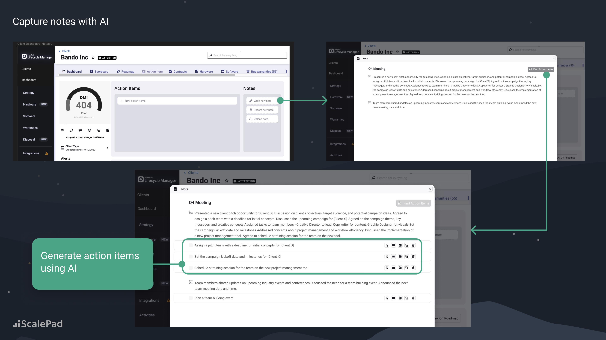
My pushbackUseful for follow-up — but too narrow to shift MSPs from service delivery into strategic client engagement.
The core shift: I stopped asking where AI should appear and started asking which parts of the workflow were too slow, too complex, or too data-heavy for humans alone — and how the workflow itself should change once AI became part of the system.
So I went back to the drawing board and looked for those opportunities in our market research. MSPs didn’t need better summaries — they needed workflow-level support that turns fragmented signals into strategic planning inputs.
Structural gaps
Weak at capturing a client's business, priorities and direction.
Generic outputs risked shallow, irrelevant recommendations.
Outputs needed to fit naturally into existing MSP workflows.
The framing question
How might we build strategic intelligence into a product not originally designed for business intelligence?
The design shiftThe shift was simple: stop treating AI as a note-taking feature. Use it to help MSPs decide what matters, why it matters now, and what to do next.
| Aspect | Copilot model | New approach |
|---|---|---|
| Input sources | Depended on one source | Multiple signals over time |
| Output type | Reactive, conversational | Structured outputs |
| Scalability | Limited | Scales beyond one feature |
| Workflow support | Solved a narrow task | Planning across workflows |
Once the direction got clearer, I realized the biggest issue was that the product had no lasting memory of each client’s business. Without that, the AI could generate language, but not strategically grounded recommendations.
Useful AI outputs required business context
Lifecycle Manager understood client environments, but not enough about the client’s business.
To generate useful suggestions, we needed to understand:
Design implication: the product needed a lightweight business-context layer.
Early exploration
I prototyped a broader CRM context layer — stakeholders, meeting memory, opportunities, business changes — to explore everything the product could durably know about a client.
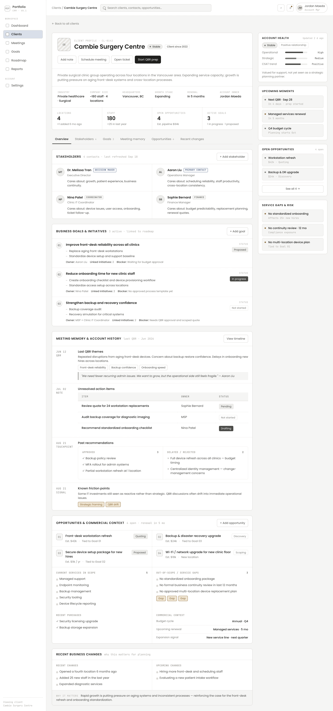
A deliberate choice of foundational context over broader intelligence.
The six decision criteria
In summary — two scoping decisions
I combined three inputs: partner interviews, QBR challenge data, and product-system constraints. The tension was clear: leadership wanted visible AI value quickly, users needed less prep work, and engineering could not support broad ingestion in the MVP. That pushed the scope toward a lightweight strategic layer — Goals for durable context, summaries for fast value, and workflow-embedded outputs instead of a new AI workspace.
The AI only became useful once the product had a durable place to store what the client was trying to achieve, and once AI outputs lived inside the workflows MSPs already used.
Decision 01
For the MVP I scoped the broader CRM exploration down to Goals: the single piece stable enough to anchor AI outputs, and the one MSPs would actually maintain.
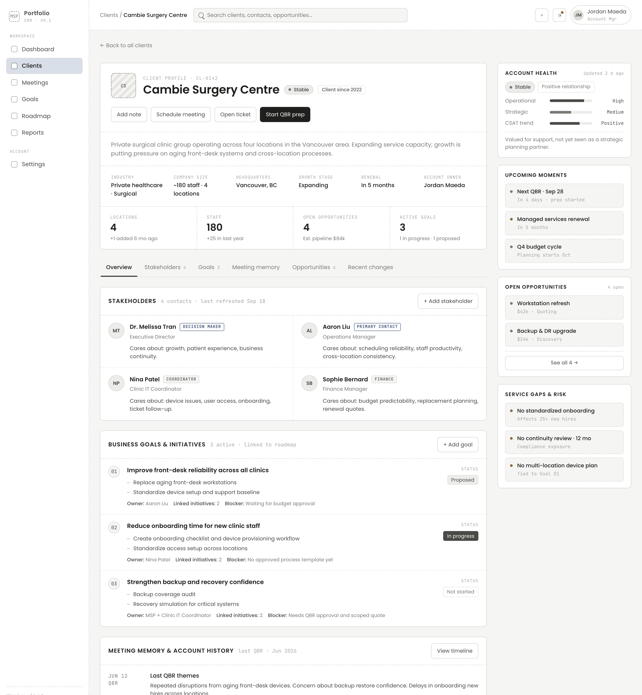
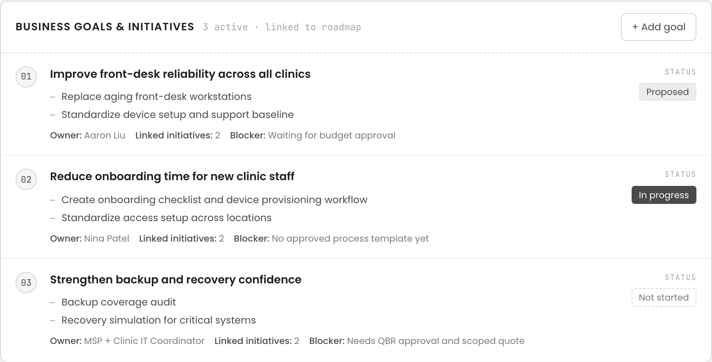
Decision 02
Without Goals, AI could only generate isolated suggestions. Once a goal was saved it became a durable anchor that fanned out across reporting, the surfaces MSPs already work in, and a future loop that feeds the AI itself.
Decision 03
I pushed for workflow integration over isolated AI surfaces. Instead of a separate place to read AI output, results were delivered straight into Meetings, Roadmap and Goals.
Embedding outputs where the work already happened cut the manual translation step, so a recommendation could become a roadmap initiative or a QBR talking point without being rewritten.
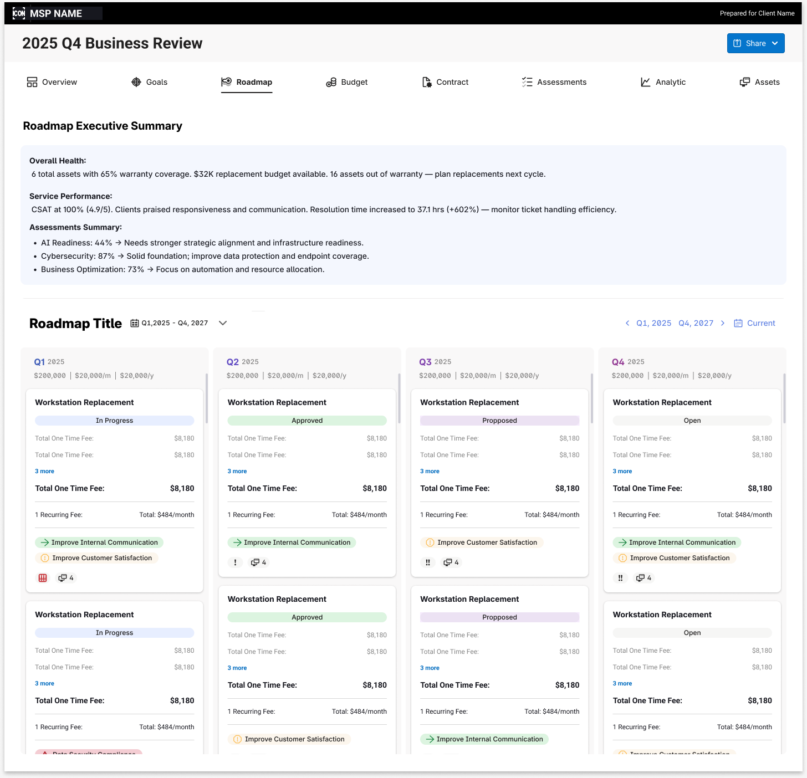
I traded breadth for lower friction and stronger signal — narrowing the initial design to the smallest set of inputs and outputs that could test whether a simple strategic layer would help MSPs prepare better and plan more.
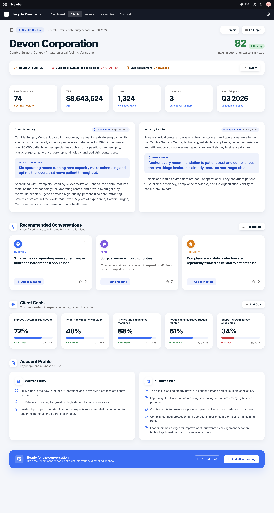
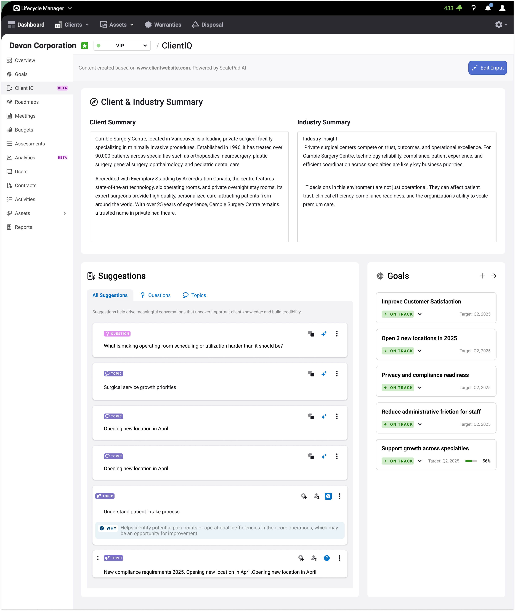
Engineering constraint
Broad ingestion across tickets, transcripts, PSA data, KB systems, and invoices was not MVP-realistic. I worked with PM/engineering to separate the experience model from ingestion maturity: design the full strategic loop, then ship the smallest input set that could validate usefulness and trust.
ClientIQ MVP flow
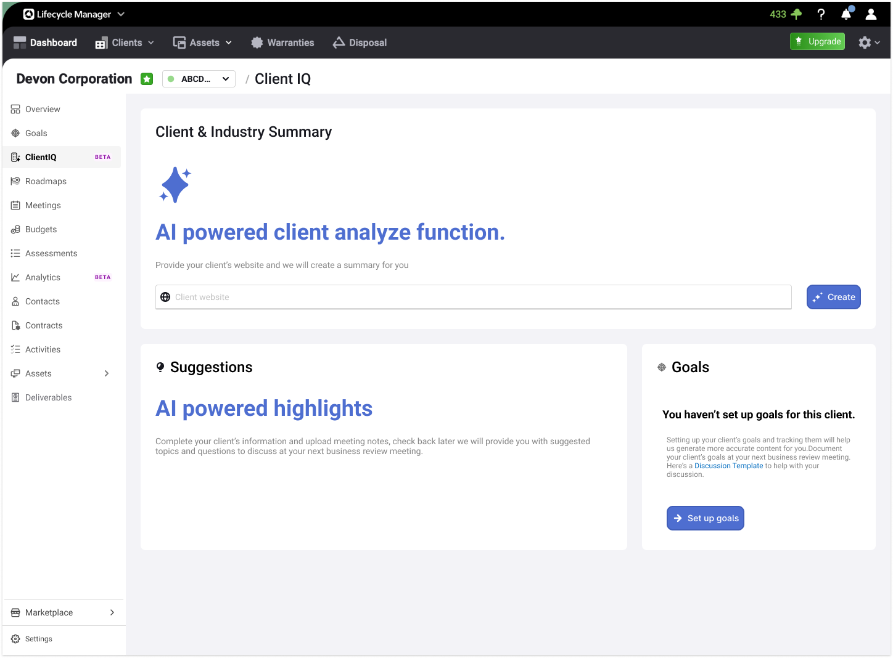
1User enters client website / context
System generates client & industry summary
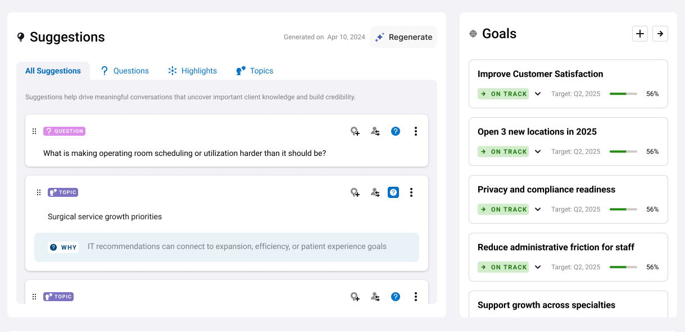
3User reviews suggested meeting topics
User turns suggestions into planning outputs
After launch, MSPs created strategic initiatives far more often — and kept doing it. The lightweight layer turned one-off meeting prep into a repeatable planning habit, validating that durable context plus structured outputs changes behavior.
This is a really simple feature, but the suggestions are pretty good — and I can actually get a precise summary of this client before QBRs.MSP user
Post-launch, initiative creation rose 119% on average and reached 216% at peak — and happened more regularly, suggesting ClientIQ made strategic planning repeatable. Public reactions showed MSPs recognized it as a meaningful step toward strategic account management.
Why direct conversion wasn’t tracked — attribution was messy (users edited and reused outputs), instrumentation wasn’t ready for connected analytics, and the MVP’s priority was proving output quality and feasibility first.
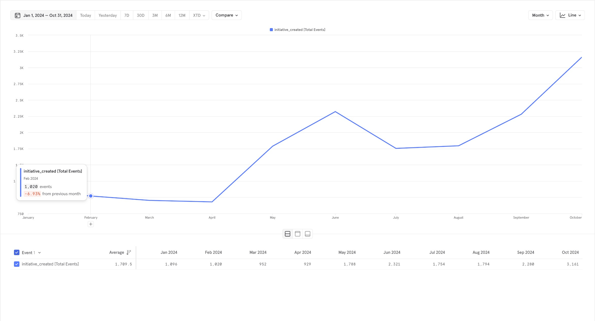
initiative_created events climbed from ~1,000 to 3,161/month over 2024, and recurred more regularly.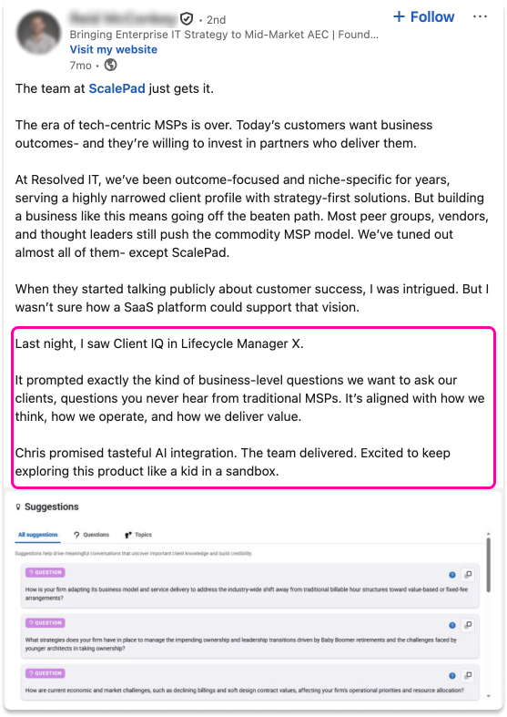
Beyond the metrics, ClientIQ drew unprompted public praise from MSP leaders — recognition that a SaaS platform could credibly support customer-success strategy, not just operations.
Public reaction
This mattered because initiatives are where strategic recommendations become budget conversations, roadmap commitments, and potential expansion opportunities.
The MVP proved the demand, but also showed the ceiling of keeping ClientIQ embedded. The deeper the product went into sentiment, meeting history, service trends, and evidence trails, the more it needed a dedicated account workspace. Lifecycle Manager could surface outputs, but it wasn’t designed to hold all of that — plus follow-up interrogation — in one place. That became the rationale for ClientIQ 2.0: keep actions embedded in existing workflows, but centralize reasoning in a dedicated client intelligence layer.
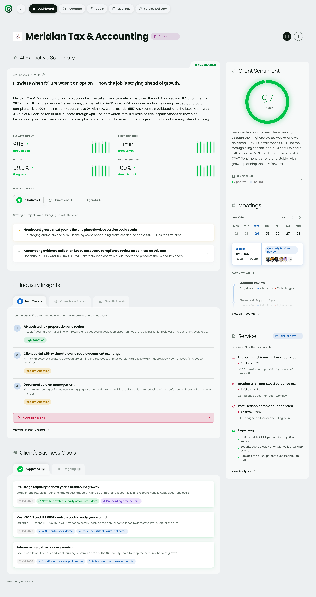
AI trust model
Refined MSP workflow
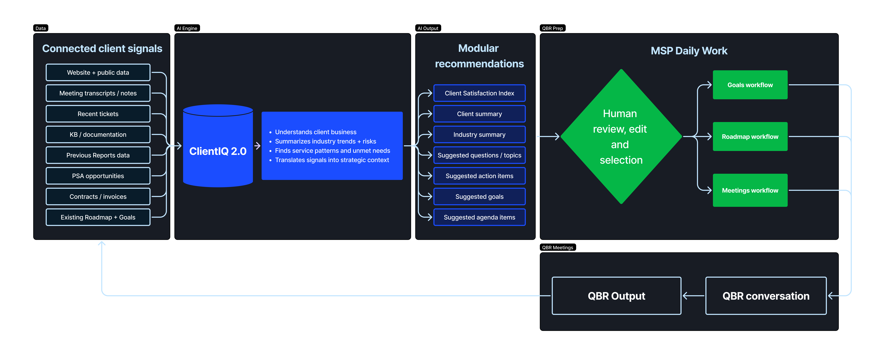
Deeper analytics, more data points
2.0 organized the product around three jobs: understand the account, explain the evidence, and turn recommendations into action. Each module was designed to support one part of that loop.
Synthesizes account context into an executive summary, with confidence and source access built in.
A sentiment score users can inspect, with trend, dimension, and evidence views behind the number.
Tracks SLA, response time, patch compliance, and ticket volume over time so teams can see whether recovery is working.
Generates recommended initiatives, questions, and agenda items grounded in account evidence.
Converts recurring signals into measurable client goals that can guide future planning.
Preserves meeting history, decisions, and risks so each conversation builds on the last.
Nothing is a black box. Every summary, score and recommendation opens into the exact signals behind it — the tickets, meetings and metrics it drew from — so you can trace any claim back to its evidence, judge it for yourself, and turn it straight into a next step.
The headline addition is a chat scoped to one client. Instead of a fixed summary you read once, you can ask why sentiment is sliding, what’s driving the SLA miss, or how the last three meetings went — and get answers grounded in that account’s own signals, every claim tied to evidence you can open and verify.
Honestly, the things we use most are Meetings, Roadmaps and Goals — that’s the stuff clients actually pay attention to.MSP user
| Feature | QBR stage | Why it matters | ClientIQ support |
|---|---|---|---|
| Meetings | Prep | Clearer, focused conversation | Suggested agenda items, strategic questions, talking points |
| Roadmap | In-session | Easy-to-understand priorities | Recommended initiatives, priorities, executive summaries |
| Goals | After QBR | Connects to long-term outcomes | Goal capture, alignment to initiatives, continuity |
The 2.0 upgrade
| Aspect | MVP | ClientIQ 2.0 |
|---|---|---|
| Input | Public website context & Goals | Multi-source: business, meetings, delivery, sentiment |
| Output | Lightweight summaries & suggestions | Modular outputs: summaries, questions, initiatives, goals |
| Trust | Useful but limited grounding | Stronger source-grounded evidence |
| Activation | Mostly prep support | Embedded into the broader workflow |
2.0 directional validation
For strategic planning — not generic AI.
Matched ScalePad’s model: impact → trust → expansion.
Positioned as a Customer Success capability, not a generic AI assistant.
This project followed a strategy-led design process, with AI used to speed up the work, not drive the decisions. From the first MVP through ClientIQ 2.0 I used AI to move faster through synthesis, concept exploration, prototyping, and documentation, while keeping the core decisions grounded in product judgment. As the product evolved, that process helped me move from validating a focused MVP to shaping a more capable 2.0 direction with broader context, deeper product surfaces, and more actionable outputs.
Clear evidence of what was broken and why it mattered
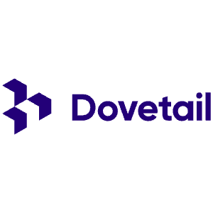
Challenged the direction against user needs, business value, workflow fit, trust requirements, and technical realism
Co-define the strategy, product hypothesis, and MVP scope & translate the strategy into PRD
 How AI helped: Structured thinking, draft articulation, alternative framing
How AI helped: Structured thinking, draft articulation, alternative framing
System-design, validated interaction model and refined solution direction. Tested with critique, user feedback, and workflow scenarios to evaluate trust, clarity, and actionability
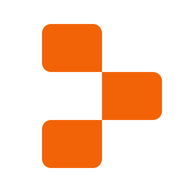

 How AI helped: tech spec, prompt engineering, vibe coding, edge-case exploration, documentation
How AI helped: tech spec, prompt engineering, vibe coding, edge-case exploration, documentation
Turned the concept into flows, states, dependencies, and build-ready specs, then refined it with product, engineering, and post-launch signals.

 How AI helped: Draft specs, organize states, summarize feedback patterns
How AI helped: Draft specs, organize states, summarize feedback patterns